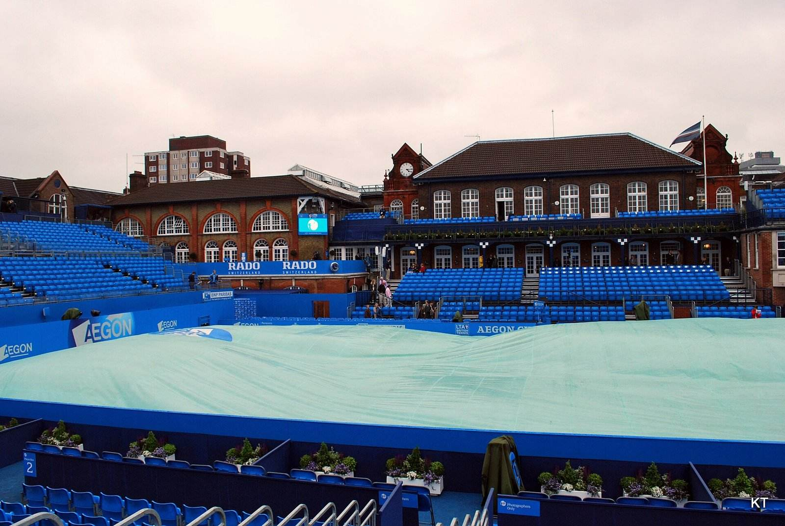

Sports · Tennis
HSBC Championships 2027
- Dates
- –
- Venue
- The Queen's Club
- Location
- London, United Kingdom
- Format
- In-person
- Category
- Tennis
- Industry
- Tennis
- Organiser
- Lawn Tennis Association
- Official website
- https://www.lta.org.uk/
About
Dates are local civil dates for the combined HSBC Championships at The Queen's Club: official WTA 500 week 7-13 June and official ATP 500 week 14-20 June 2027.
Topics: ATP 500, WTA 500, grass-court tennis.
No organiser attendance figure found on the official pages fetched 24 Nov 2026 for this upcoming edition. Ranked by our estimated size tier 'medium' (10,000-30,000 attendees/visits), a judgement from format, venue and scale, not an official number.
Sources
- Official — https://api.wtatennis.com/tennis/tournaments/1111/2027
- Official — https://www.atptour.com/-/media/files/calendar-pdfs/2026/2027-atp-tour-calendar-14-january-2026-updated.pdf
- Official — https://wtafiles.wtatennis.com/pdf/calendar/WTA_Calendar_2027.pdf
- Event source — https://www.wtatennis.com/tournaments/1111/queens/2027
- Official website — https://www.lta.org.uk/